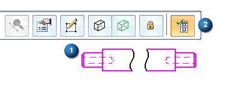
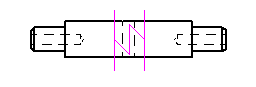
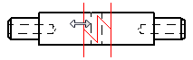
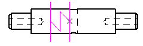
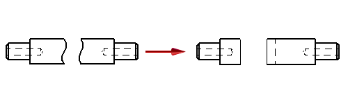

Modify break lines in a broken view
You can modify a broken view by displaying and editing the break lines used to create it.
-
Click the broken drawing view (1), and then click the Show Broken View button on the Drawing View Selection command bar (2) to deselect it.

The drawing view is now shown in its unbroken state. This provides access to the break lines for editing.

-
Click the break line pair to display the break line editing options on the command bar.

-
Do any of the following:
-
To change the extent of the broken view, position the cursor over the break line you want to move. When a double arrow is displayed, click+drag the break line.

Tip:You can drag the break line onto keypoints to create an associative relationship. If the drawing view geometry changes, the location of the break lines change along with it. You can locate and select keypoints using the mouse or QuickPick, or by pressing shortcut keys.
Constraints are created at the keypoints, such as at the midpoint shown below.

-
To change the extent of the break symmetrically in both directions, enter a value in the Break gap box on the command bar.
-
Choose a different type of break line by clicking the Break Line Type button
 .
. -
To delete the break in the view, select either of the break lines and press the Delete key.
-
-
To apply the changes, click Finish on the command bar.

-
To move a break line attached to a keypoint, you must first delete the constraint.
-
You can use the Undo and Redo commands to adjust the results of the break line edits.
How do I
Create a broken-out section viewModify a broken-out section view
Create a broken view
Break an isometric view with a break axis
Connect a break line at a distance
Display break lines and cropped edges in a broken view
Copy break lines between drawing views
Remove inherited break lines
Learn more
Broken viewsLook up more details
Broken-Out commandBroken View command
Broken View command bar
Inherit Break Lines command
Remove Break Line Inheritance command